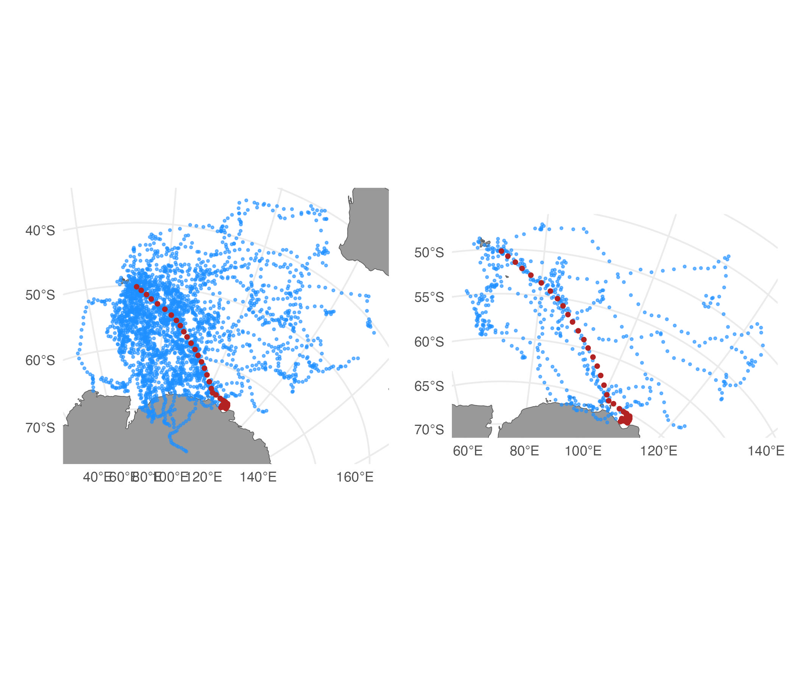
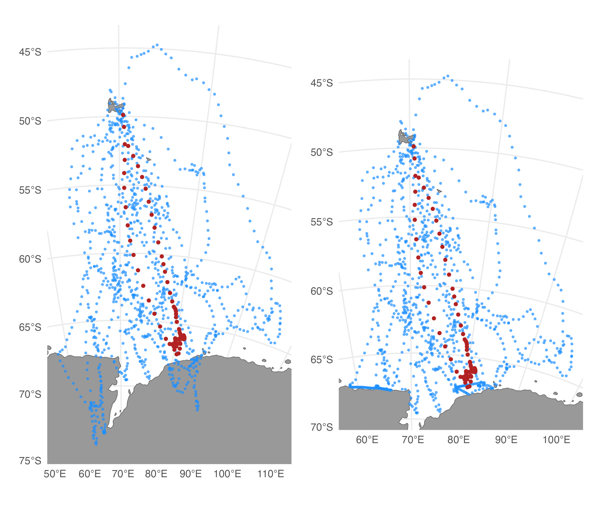

aniMotum provides 2 track simulation functions for
simulating random tracks from a few different movement process models,
sim(), and for simulating random tracks from fitted SSM
models, sim_fit().
sim()
The sim function is useful for situations where
simulated random tracks are required, such as understanding how observed
animal tracks deviate from the expectations of the rw,
crw or mp movement process models, or for
exploring potential bias in SSM fits to data. Tracks can be simulated
with regular or random time intervals between locations via the
tdist, ts and tpar arguments, and
with Argos Least-Squares- or Kalman filter-based location errors via the
error, tau and rho_o arguments.
Multiple behavioural states with stochastic switching can be implemented
for the rw and crw models via the
alpha argument.
Plot simulated tracks
(plot(sim.rw, type=2) + labs(title="'rw'") | plot(sim.crw, type=2) + labs(title="'crw'")) /
(plot(sim.mp, type = 2) + labs(title="'mp'") | plot(sim.mp, type = 1)) +
plot_layout(guides = 'collect') &
theme(legend.position = 'bottom')Fit SSM to simulated lon,lat locations (with Argos error)
# coerce simulated RW data to format expected by fit_ssm
d <- with(sim.rw, data.frame(id = 1, date, lc, lon, lat))
# fit SSM `rw` model without any speed filtering
fit.rw <- fit_ssm(d,
spdf = FALSE,
model = "rw",
time.step = 12,
control = ssm_control(verbose = 0))
# fit SSM `crw` model
fit.crw <- fit_ssm(d,
spdf = FALSE,
model = "crw",
time.step = 12,
control = ssm_control(verbose = 0))
# extract SSM fitted locations
loc.rw <- grab(fit.rw, "fitted")
loc.crw <- grab(fit.crw, "fitted")
# compare estimated to true values in y-direction
ggplot() +
geom_point(data = sim.rw, aes(date, I(y+y.err)), col = "grey60") + # y-values observed with Argos error
geom_point(data = sim.rw, aes(date, y), col = "dodgerblue") + # true y-values
geom_point(data = loc.rw, aes(date, y), cex = 0.7, col = "firebrick") + # RW SSM fitted y
geom_point(data = loc.crw, aes(date, y), cex = 0.4, col = "orange") # CRW SSM fitted y
The rw (red) and crw (orange) SSM’s yield
similar, reasonable fits to the RW simulated track, although both tend
to smooth through some of the natural variability in the simulated true
y-values (blue). This reflects a common inability of SSM’s to fully
separate process and measurement variability in an unbiased manner,
especially when measurement error is greater than natural variability
(Auger-Méthé et al. 2016).
sim_fit()
The sim_fit function is rather different, taking a
aniMotum SSM fit object (class ssm_df) and
simulating replicate tracks by using the movement parameter estimates
from the fitted model. Currently, tracks can be simulated from
rw and crw SSM model fits. Tracks can be
simulated from either the observation times
(what = "fitted") or the prediction times
(what = "predicted") and, thus, are constrained to have the
same number of locations. The simulated tracks are otherwise
unconstrained and should not be considered as resampled tracks
suitable for exploring uncertainty in the SSM-estimated track. They are
useful for habitat usage modelling, to represent habitat that is
potentially available to a collection of tracked individuals (e.g.,
Hindell et al. 2020).
Simulate tracks from an SSM fit and plot:
set.seed(pi)
fit <- fit_ssm(sese2,
model="crw",
time.step=24,
control=ssm_control(verbose=0))
st <- sim_fit(fit[2,], what="predicted", reps=5)
plot(st, zoom=TRUE)In this case, 3 of the 5 replicate tracks (purple) cross onto land in southeast Asia. We can further constrain the tracks to avoid land by adding a potential function (Brillinger et al. 2012) to the simulation that down-weights movements that cross onto land.
Simulate tracks with a potential function to help avoid land:
load(system.file("extdata/grad.rda", package = "aniMotum"))
set.seed(pi)
st.pf <- sim_fit(fit[2, ], what = "predicted", reps=5, grad=grad, beta=c(-350,-350))
plot(st.pf, zoom=TRUE)
Here, we use built in gradient rasters based on distance from ocean and
strongly negative beta parameters (for the x and y directions,
respectively) to down-weight movements onto land. Custom gradients can
be supplied, e.g., for finer-scale tracks or for other kinds of barriers
to movement. The strength of the potential function can be varied by
altering the magnitude of the beta parameters, although extremely strong
values can yield implausible artefacts in the resulting tracks. Note
that with beta = c(-300,-300), the tracks do not all
entirely avoid crossing land. Features such as narrow islands or
peninsulas pose a particular difficulty for this method, and tracks are
not always guaranteed to remain off land.
Simulate central place foraging tracks
The SSM-estimated track in the above example implies a central place
foraging strategy, where the southern elephant seal departs from its
breeding colony on Iles Kerguelen for an extended period of time and
eventually returns. The simulated tracks do not reflect this strategy
because the crw SSM fitted to the data does not have
long-term memory or any other mechanism that could mimic the return
portion of the foraging trip. We can, however, constrain the simulated
tracks to return to their origin by applying a simple Brownian Bridge
using the cpf argument:
The cpf argument can be used in conjunction with the
potential function, however, care should be taken as their
implementations are independent with the potential function applied
first. This means tracks that successfully avoid crossing land due to
the potential function are not guaranteed to remain so after applying
the cpf argument.
sim_filter()
When simulating a large number of replicate tracks using
sim_fit, some portion of the simulations may reflect
unrealistic movement patterns due to the relatively unconstrained nature
of the simulation. A simple approach for identifying and removing less
realistic simulated tracks is to use a similarity filter (e.g., Hazen et
al. 2017). The sim_filter function can calculate two
related similarity functions, based on a comparison of the geodesic
distances and bearings from the start and end locations of the SSM
fitted track and each of the simulated tracks. Simulated tracks can be
discarded by defining a threshold quantile via the keep
argument.
# simulate 50 tracks
st <- sim_fit(fit[1,], what = "predicted", reps = 50)
# filter, keep only top 20 %
st_f <- sim_filter(st, keep = 0.2)
# compare unfiltered vs. filtered tracks
plot(st) | plot(st_f)
sim_filter handles central place foraging tracks
automatically by comparing distances and bearings from the start
location to the most distant location.
# simulate 50 cpf tracks
st.cpf <- sim_fit(fit[2,], what = "predicted", reps = 50, cpf = TRUE)
# filter, keep only top 20 %
st.cpf_f <- sim_filter(st.cpf, keep = 0.2)
# compare unfiltered vs. filtered tracks
plot(st.cpf) | plot(st.cpf_f)
route_path()
We can use route_path() (see
vignette('Path_rerouting') for more details) to re-route
the few simulated track segments that cross land.
# reroute simulated tracks
st.cpf_frr <- route_path(st.cpf_f, centroids = TRUE)
# compare
plot(st.cpf_f, zoom=TRUE) | plot(st.cpf_frr, zoom=TRUE)
In more severe cases, tracks first could be simulated using potential functions, filtered, and then any remaining segments re-routed from land.
References
Auger-Méthé M, Field C, Albertsen CM, Derocher AE, Lewis MA, Jonsen ID, Mills Flemming J (2016) State-space models’ dirty little secrets: even simple linear Gaussian models can have estimation problems. Scientific reports. 6(1):1-10.
Brillinger DR, Preisler HK, Ager AA, Kie J (2012) The use of potential functions in modelling animal movement. In: Guttorp P., Brillinger D. (eds) Selected Works of David Brillinger. Selected Works in Probability and Statistics. Springer, New York. pp. 385-409.
Hazen et al. (2017) WhaleWatch: a dynamic management tool for predicting blue whale density in the California Current J. Appl. Ecol. 54: 1415-1428.
Hindell MA, Reisinger RR, Ropert-Coudert Y, et al. (2020) Tracking of marine predators to protect Southern Ocean ecosystems. Nature. 580:87–92.